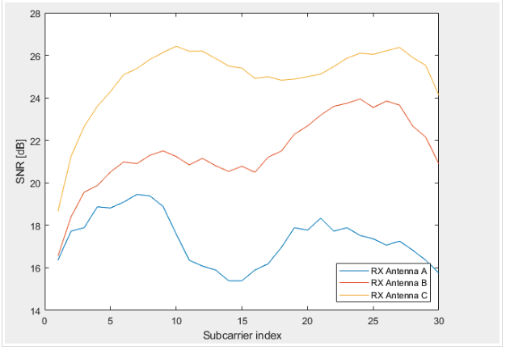
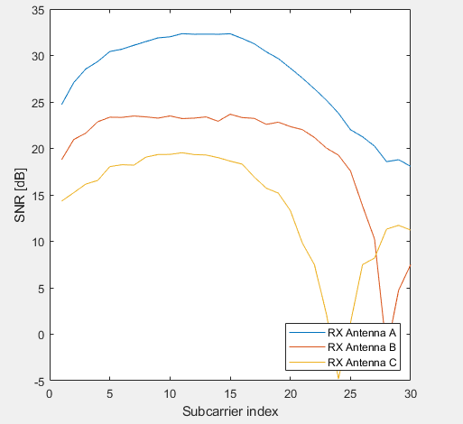
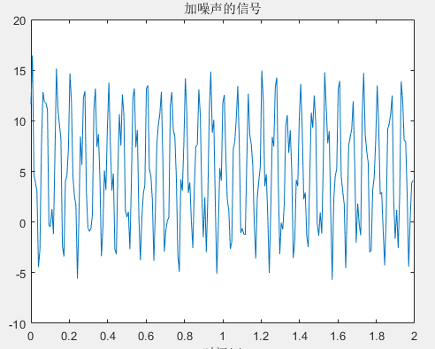
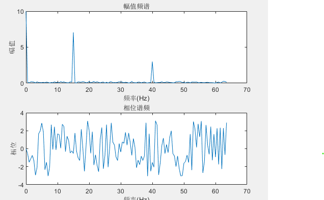

本文目录
笔记
【1】list station mac address
1 | $ sudo ls /sys/kernel/debug/ieee80211/phy0/netdev:wlan0/stations/ |
【2】Parsing the CSI trace file
1
$ cd linux-80211n-csitool-supplementary/matlab
In MATLAB or Octave
1 | // use the sample_data or use the generated data |
bfee_count:a count of the total number of beamforming measurements that have been recorded by the driver and sent to the space
Nrx:represents the number of antennas used to receive the packet by this NIC
Ntx:represents the number of space/time streams transmitted
prem:The sample value of [3 2 1] implies that Antenna C was sent to RF Chain A, Antenna B to Chain B, and Antenna A to Chain C
csi:It is a Ntx x Nrx x 30 3-D matrix where the third dimension is across 30 subcarriers in the OFDM channel
1
>> csi = get_scaled_csi(csi_entry); // we use the script get_scaled_cis.m to do this
Let’s look at the three different spatial paths on the 1x3 link we measured
(Running the code with the Nrx is not 3 and the Ntx is not 1,there is a problem;i use the squeeze() turns csi
in to a 3x30 matrix,but at first,the matrix is 1x3x30,we should turn the matrix shape)
The complete block of code is shown below.
1 | csi_trace = read_bf_file('sample_data/log.all_csi.6.7.6'); |
The result is shown below

for the matrix shape is 3x3x30,i try to change the shape of the matrix into 1x3x30,so i can run the code correctly
The complete block of code is shown below.
1 | csi_trace = read_bf_file('subcarrier_1snd.dat'); |
The result is shown below

notice: The above data can be obtain from the Internet;In netx chapter,i will use the data that is got from the NIC
before we realize ft,we must know some knowledge.
1 | clear % 清空变量区 |

1 | % 在上面的基础上 |
